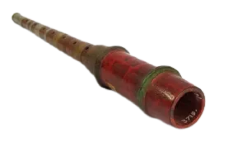

Sulawesi Barat

Ini adalah Pakkeke, Pakkeke adalah alat musik tiup Suku Mandar di Sulawesi Barat. Alat musik ini dibuat dari bambu kecil berdiameter sekitar 2 sentimeter. Kemudian ujung bambu tersebut dililit oleh daun kelapa kering sehingga menghasilkan suara yang unik.